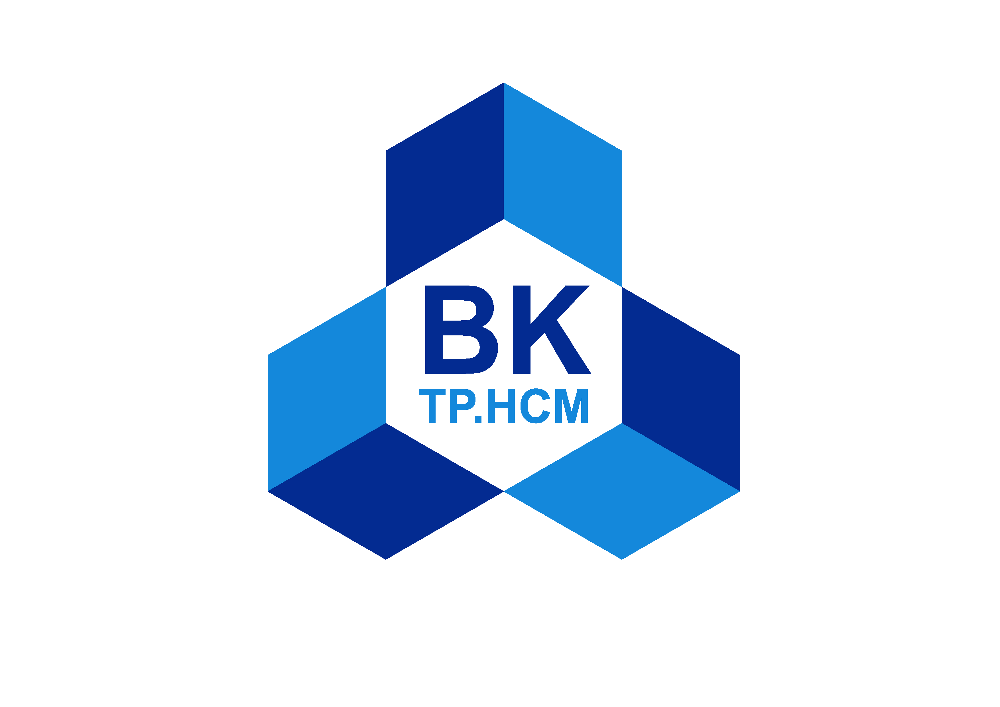

MÁY PHÁT PHÁT SÓNG ĐA KÊNH
[v2.3]
MÔN XỬ LÝ SỐ TÍN HIỆU - ĐỀ TÀI 6 - L03 - NHÓM 06
CH1
CH2
⚙️ CH1
⚙️ CH2
Phát sóng kênh này (Enable)
Dạng sóng
[CH1]
Sine
Square
Tri
Saw
Noise
Tần số (Frequency)
Hz
Biên độ (Vpp)
V
Pha ban đầu (Phase)
°
▶ MASTER OUTPUT ON
OSCILLOSCOPE VIEW (DUAL TRACE)
Time/Div:
ms
Volt/Div:
V
■ CH1
■ CH2
SPECTRUM ANALYZER (MIXED FFT)
Span:
Hz
Tần số kênh đang xem
1.000 kHz
Biên độ Max (Vpk)
2.50 V
Giới hạn Nyquist (fs/2)
48.00 kHz
Trạng thái Kênh
OFF (Hi-Z)